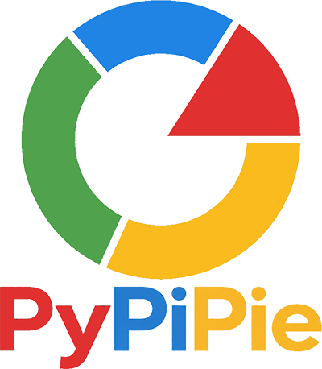

PyPiPie Factory Tools feature discovery and release-notification utility.
Use a normal click when you want to see what has been added since the last time you checked.
Use Shift-click whenever you want to browse the complete installed feature catalog.
config.py action.help.html.What's New treats a feature as production ready when its folder contains a help.html file. Folders without help.html are not included in the catalog.
The feature is tracked by a normalized ID based on its folder path relative to the extension root. Once that ID has been shown during a normal run, it is considered seen for that user.
help.html does not make that feature new again. The current implementation tracks newly added feature IDs, not help-file content changes.The blue NEW badge and the Open help link both open that feature's local help file.
While the extension is scanned, What's New displays the branded Welcome.xaml window. The dialog is modeless so its progress display can update while discovery continues.
The status changes as the tool finds the extension root, indexes feature folders, reads feature metadata and icons, checks saved history, saves the updated history when appropriate, and builds the resulting HTML.
Each feature's display information comes from its own help.html and bundle folder.
| Display item | Source |
|---|---|
| Feature name | <title> from help.html; otherwise the folder name. |
| Description | <meta name="description" ...> |
| Type chip | <meta name="type" ...>; otherwise Tool for supported button bundles or Feature for other folders. |
| Date | <meta name="date" content="YYYY-MM-DD">; otherwise the help file's modified date. |
| Feature icon | First matching supported icon file in the same feature folder. |
<title>Door Parameter Updater</title>
<meta name="description" content="Automatically updates configured door parameters by phase.">
<meta name="type" content="Updater">
<meta name="date" content="2026-10-14">If a title ends with - Help, – Help, or — Help, that suffix is removed in What's New so the card displays only the feature name.
The feature folder is checked in this order:
icon.png, icon.dark.png, icon.svg, icon.jpg, icon.jpeg.
Normal runs keep a per-user list of feature IDs that have already been displayed. The current state file is:
%APPDATA%\PyPiPie\WhatsNew\state.jsonThe file contains an initialization flag, the normalized feature IDs already seen by that user, and the last-run time. Writes are performed through a temporary file and then verified by reading the saved data back.
state.json makes the next normal execution behave as a first run and show the entire installed feature set again.The command depends on pyRevit's normal script/config separation. Keep the main script and Shift-click configuration script distinct.
What's New.pushbutton\
WhatsNew_script.py # normal click / main command
config.py # Shift-click action
Welcome.xaml # loading dialog
PyPiPie_Logo.png # loading + output branding
icon.png # pyRevit ribbon icon, if used
bundle.yaml # bundle metadata, if used
help.html # this help page*script.py command file to this bundle. pyRevit selects a matching script as the bundle's main command; competing script filenames can cause the wrong file to execute. The optional Shift-click action belongs in config.py.config.py loads the shared implementation from WhatsNew_script.py without allowing its normal auto-run, then explicitly calls main(True). A normal pyRevit execution of WhatsNew_script.py calls main(False).
| Symptom | Check |
|---|---|
| Every normal click shows the full catalog. | Confirm the bundle contains one main *script.py file and the Shift-click file is named config.py. Reload pyRevit after changing bundle filenames. |
| Footer says Mode: Shift catalog on a normal click. | The config action is being executed as the main command. Check the bundle filenames first. |
| Second normal run still shows everything. | Check that %APPDATA%\PyPiPie\WhatsNew\state.json exists and that the generated footer reports a nonzero seen count and a successful state save/verification. |
| No loading dialog. | Confirm Welcome.xaml is beside the main script and includes StatusText, PercentText, LoadProgress, and LogoImage. |
| Loading dialog has no PyPiPie branding. | Confirm PyPiPie_Logo.png is in the command folder. The script can fall back to local button icon files if the branding image is unavailable. |
| A feature is missing. | Confirm that feature has its own help.html. What's New intentionally does not list folders without one. |
| A feature name includes “Help”. | Only a trailing dash + “Help” is automatically removed. Review the feature's <title> value. |
| Feature icon is missing. | Use one of the supported icon filenames in the same folder as that feature's help.html. |
help.html.EXTRA_ROOTS.